Nesse circulo Cromático há cores primarias secundárias e terciarias
Amarelo, Vermelho e Azul

Verde, laranjaa e violeta
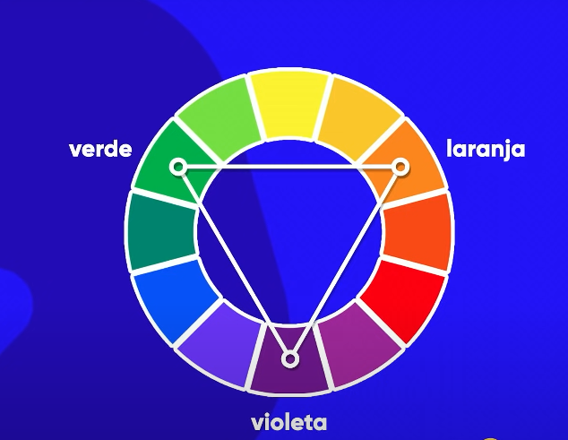elas são misturas da primeira com secundaria, para darmos nome a cor terciaria, primeiro usamos o nome da primaria e depois o da secundaria
EX: Amarelo alaranjado e amarelo-esverdeado etc

Algumas cores são mais 'vivas' que outras

ATENÇÃO: Uma paleta de cores deve conter entre 3 e 5 cores no MÁXIMO
Quando queremos dar um CONTRASTE (diferença de cores) para escolher a cor que da mais contraste, basta seguir uma linha reta EX:
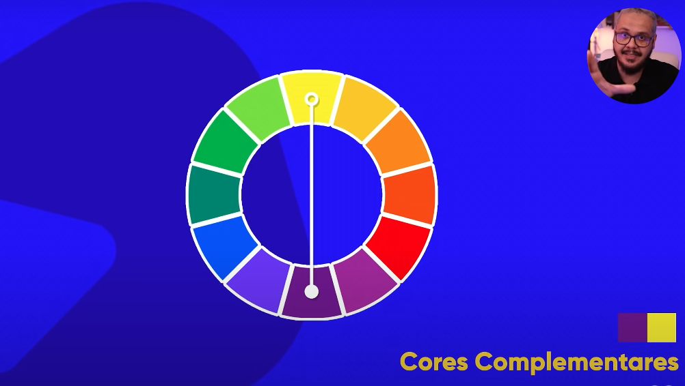 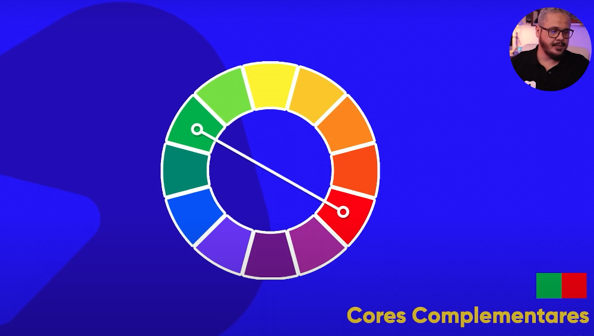 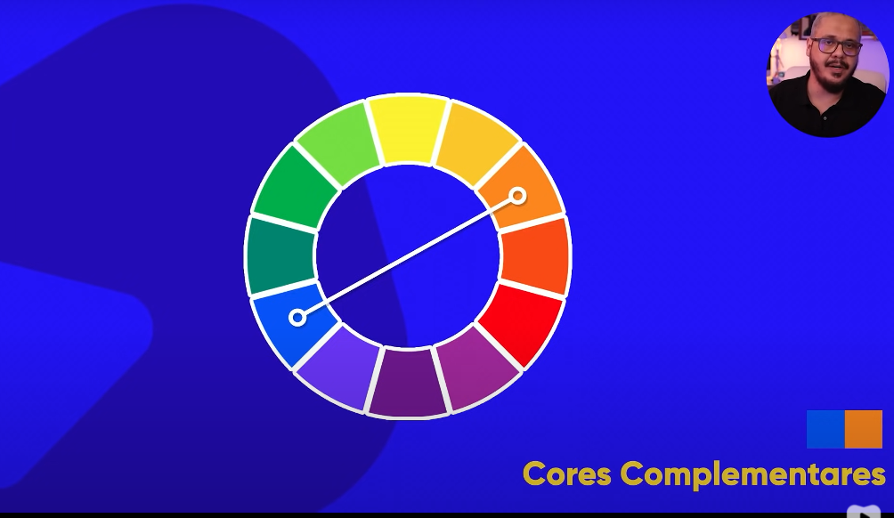Cores análogas não há um grande contraste entre elas, mas não perceptiveis
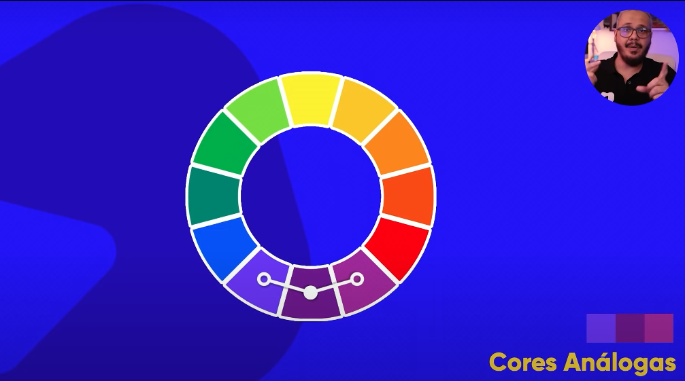Podemos juntar cores análogas e ainda somar com uma que da contraste Ex:
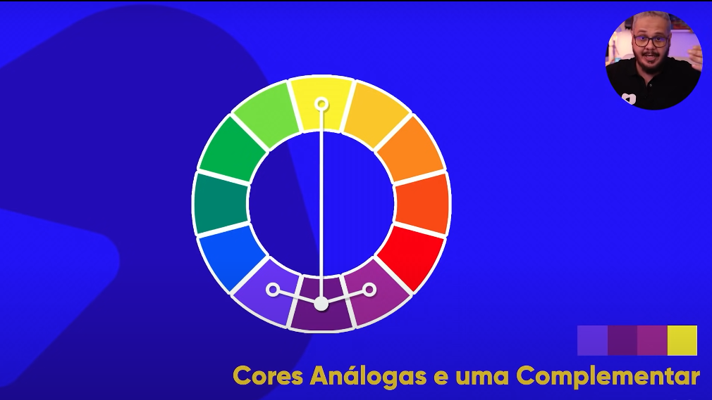E com essas 4 cores podemos dizer que ja temos uma PALETA de cores para o nosso site
As vezes queremos dar um contraste, mas não um constraste tão grande, para isso usamos cores análogas relacionadas
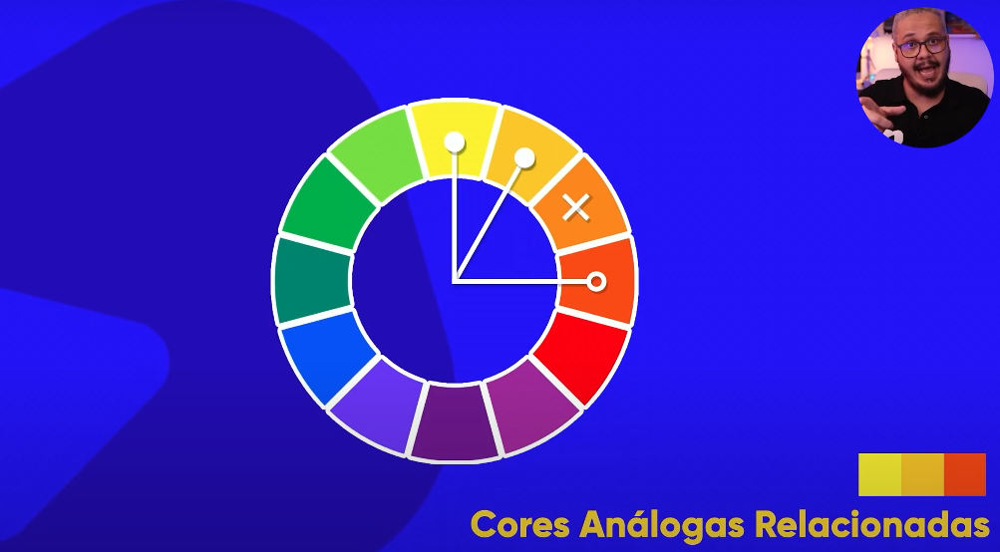pTambém pode escolher para o outro lado <
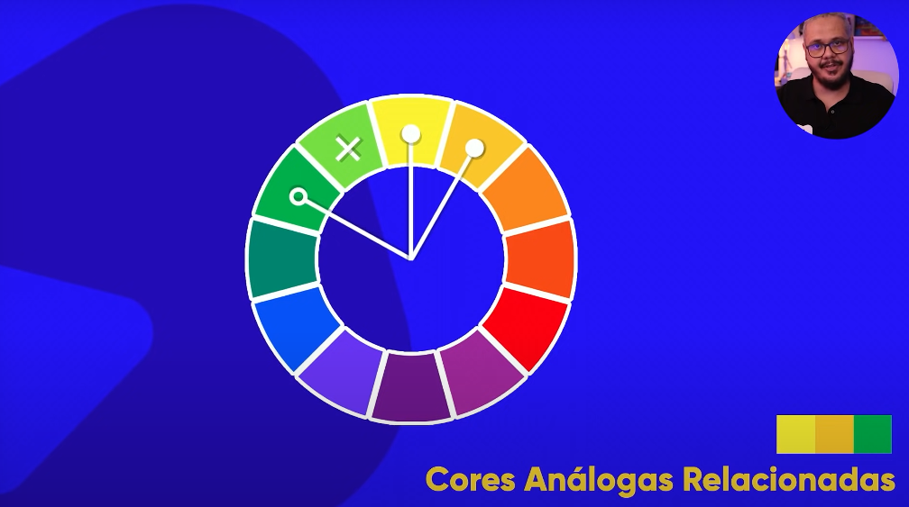Podemos escolher cores de 3 em 3, assim formando um triangulo equilatero no disco cromatico, LEMREBRE-SE: o disco pode-se mover para qualquer lado, então vc pode escolher outras paletas de cores usando o método de cores triádicas
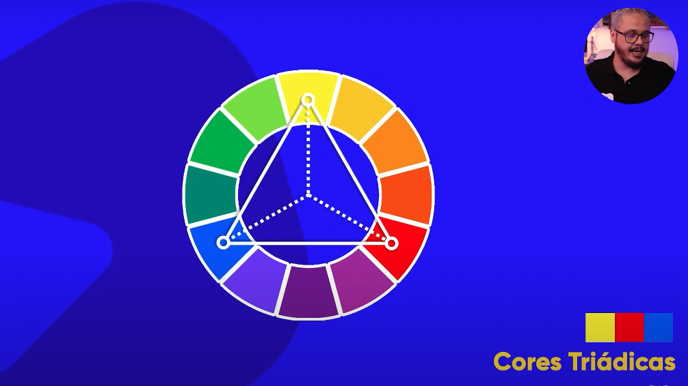LEMREBRE-SE: o disco pode-se mover para qualquer lado, então vc pode escolher outras paletas de cores usando o método de cores triádicas
Mesmo esquema da triádica, mas aqui pulamos de 2 em 2, e formamos um quadrado
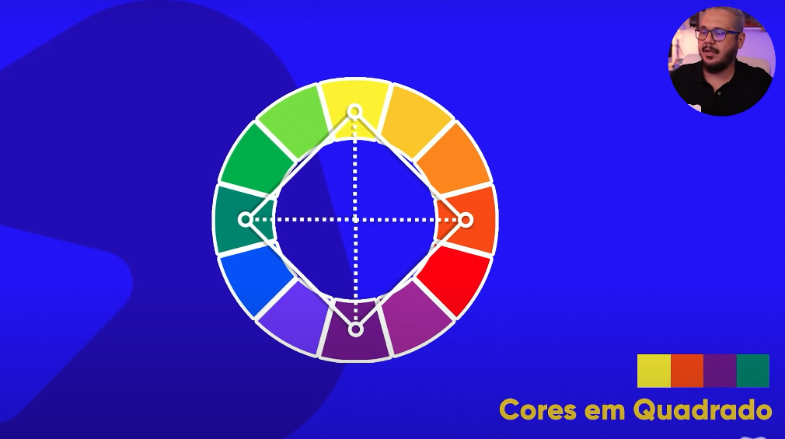Mais conhecida como [DEGRADÊ] Usando cores em monocromia podemos alterar saturação e luminosidade, e com isso ganhamos uma paleta com diversas outras cores. EX:
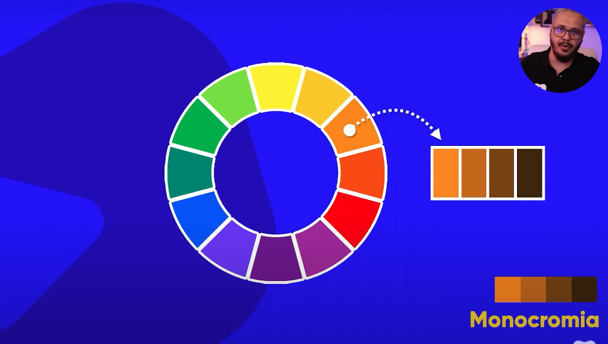